28º Seminário de Pesquisa e Extensão
Na Unidade Guanhães, a programação acontece de 09 a 13 de novembro de 2026. A submissão de resumos já terminou; agora é hora de escolher as atividades, com prazo prorrogado até 29 de outubro, e de garantir a inscrição como ouvinte, obrigatória para todos. e a escolha das atividades também. Agora falta garantir a inscrição como ouvinte, obrigatória para todos, até 10 de novembro.

Os cartazes de cada noite
Toque num cartaz para ver em tamanho grande. A escolha das atividades pelos QR codes dos cartazes terminou em 29 de outubro.
09/11 segunda Abertura oficial na Câmara Municipal de Guanhães
10/11 terça On-line, com transmissão pelo YouTube /UEMGBR

11/11 quarta Na UEMG Guanhães
![Cartaz. Apresentação de resumos científicos: 34 trabalhos em 5 Grupos de Trabalho, 11 de novembro às 19 horas; o GT 1 começa às 18h10. GT 1, 5 trabalhos, avaliação da Profa. Gabriella e da Profa. Paula. GT 2, às 19h, 8 trabalhos, avaliação da Profa. Thays Ventura e de Franklin Flauzino. GT 3, 7 trabalhos, avaliação da Profa. Liliane Santos e de Alan Ricardo. GT 4, 7 trabalhos, avaliação do Prof. Vinícius e do Prof. Bruno Ferreira. GT 5, 7 trabalhos, avaliação do Prof. Luiz Otávio e do Prof. Jonatan. 10 minutos para cada apresentação. QR code para procurar o seu grupo no site do NAE.](assets/seminario/cartazes/resumos.webp)
12/11 quinta Na UEMG Guanhães


13/11 sexta Cinema comentado na UEMG Guanhães


Apresentações de resumos
- 34trabalhos
- 5Grupos de Trabalho
- 18h10início do GT 1
- 10 minpor apresentação
São 34 trabalhos em 5 grupos, com 10 minutos para cada apresentação. O Grupo de Trabalho 1 começa mais cedo, às 18h10; os demais, às 19h. Procure o seu nome ou o título do trabalho:
Baixar o cartaz das apresentações · imagem para enviar à turma

Grupo de Trabalho 118h10 às 19h00 (começa mais cedo) · 5 trabalhos
Avaliação: Profa. Gabriella e Profa. Paula
- Pesquisa Formalismo jurídico e ficcionalismo moral: uma defesa cética da decisão por regrasVinicius de Souza Faggion
- Pesquisa Frei Gilson: o novo porteiro do céu? Liberdade religiosa, discriminação e estado democrático de direitoFranklin Leonardo Ferreira Flauzino
- Pesquisa Ser, existir e performar a dissidência: direitos frente à colonialidadeFranklin Leonardo Ferreira Flauzino
- Pesquisa Prompt injection: injeção de instruções em agentes de inteligência artificial e responsabilidade civilJonatan Barbosa Silva
- Pesquisa Elementos inteligíveis do direito positivo: universalidade, necessidade e liberdadeAlan Ricardo Pereira
Grupo de Trabalho 219h00 às 20h20 · 8 trabalhos
Avaliação: Profa. Thays Ventura e Franklin Flauzino
- Pesquisa A importância da teoria de Hans Kelsen para construção da pirâmide judicial no BrasilGislene Silva do Nascimento
- Pesquisa O corpo feminino como território de disputa: da ADPF 442 ao PDL 343/2023Rillary Batista dos Santos
- Pesquisa Avaliação estado de conservação de ponte com auxílio de modelagem 3D com droneKelven Evaristo da Silva
- Pesquisa Revisitando a legitimidade do Estado: o feixes de relações de direito entre a regulação doméstica e a soberania internacionalArthur Alves Aguiar
- Extensão Projeções de cidadania e aprendizado jurídico: o direito através do cinema no ensino médio e na graduaçãoKariny de Amorim Silva
- Extensão Questões travestis e trans na produção acadêmica: um mapeamento do V Congresso de Diversidade Sexual e de GêneroDandara da Costa Rocha
- Extensão Conexão UniversitáriaGabriel Victor Lopes Sathler Henriques
- Pesquisa Propósito da avaliação biopsicossocial no Estatuto da Pessoa com Deficiência como forma de “enquadramento ampliado” e os impactos negativos da não implementação dos instrumentos necessáriosGabriel Victor Lopes Sathler Henriques
Grupo de Trabalho 319h00 às 20h10 · 7 trabalhos
Avaliação: Profa. Liliane Santos e Alan Ricardo
- Extensão A tecnologia pode fabricar um cidadão? Propaganda política, manipulação e liberdade de escolha: da Era Vargas à inteligência artificialIsadora Andreata Costa
- Pesquisa A fome como questão de direitos: os desafios para a efetivação do direito à alimentação adequada no BrasilIngrid Gama da Silva
- Pesquisa A proteção jurídica de crianças e adolescentes diante da exposição e manipulação de imagens na internet: desafios na era da inteligência artificialIngrid Gama da Silva
- Pesquisa Racionalidade utilitária e vida nua em “Geni e o Zepelim”: dignidade, poder e instrumentalização do corpoSamuel Fagundes Ayres Vieira
- Pesquisa Liberdade de expressão e discurso de ódio em redes sociais: critérios de delimitação e responsabilidade dos provedores de aplicaçãoNicole Stefany de Almeida Nunes
- Pesquisa Responsabilidade civil do influenciador digital na divulgação de plataformas e produtos: publicidade oculta e vulnerabilidade do consumidorNicole Stefany de Almeida Nunes
- Extensão Livro Axioma: compilação das questões da Olimpíada Itabirana de Matemática (OIM)Ana Clara Silva Bertozo
Grupo de Trabalho 419h00 às 20h10 · 7 trabalhos
Avaliação: Prof. Vinícius e Prof. Bruno Ferreira
- Pesquisa Feminicídios de mulheres sob medida protetiva: responsabilidade civil objetiva do Estado por omissão qualificadaIramarcia Nunes Damasceno
- Pesquisa A contramobilização conservadora e a ofensiva jurídica associativa contra a autodeterminação de gênero: análise do lobby anti-trans no BrasilAlana Júlia Antunes Santos
- Pesquisa Violência política de gênero em ambiente digital: direitos políticos, igualdade e os limites da resposta normativa BrasileiraAlana Júlia Antunes Santos
- Pesquisa Análise estatística dos valores de materiais de construção: um comparativo entre Guanhães e Divinolândia de MinasLeileane Porcino de Souza
- Pesquisa Além das paredes de casa: violência vicária, a ampliação da Lei Maria da PenhaRenata Coelho Aguiar
- Pesquisa O movimento red pill e a influência das redes sociais na propagação e normalização de discursos misóginos entre jovensLara Simões Pessoa Aguiar
- Pesquisa Contra a fuga dos debates eleitorais: uma crítica moral à tese da imunidade especial dos candidatos ao poder executivoDaniel Mendonça Lino
Grupo de Trabalho 519h00 às 20h10 · 7 trabalhos
Avaliação: Prof. Luiz Otávio e Prof. Jonatan
- Pesquisa Filhos do cárcere: encarceramento paterno e reprodução intergeracional da criminalidadeJuliana Marina Figueiredo dos Santos
- Pesquisa A ruralização da criminalidade no estado de Minas Gerais: uma análise criminológica do aumento dos crimes patrimoniais contra famílias rurais na circunscrição de São João EvangelistaClênio Eduardo Borges dos Santos
- Pesquisa A imputabilidade kantiana na sociedade digital: o dever de diligência dos desenvolvedores frente ao uso de inteligência artificialWesley Pedro Ribeiro Santos
- Pesquisa A (in)eficácia da Lei n.º 12.850/2013 no combate às organizações criminosas: análise crítica e perspectivas a partir do PL 2.428/2025Artur Henrique da Costa Araújo Pinto
- Pesquisa Importância da avaliação técnica dos níveis de iluminância em salas de aula da UEMG, Campus GuanhãesThomas Pinho Coelho Nunes
- Pesquisa Proposta de intervenção urbana de uma área não edificada no bairro Vista Alegre, na cidade de Guanhães/MGMilena do Carmo Pinheiro
- Pesquisa Análise de tráfego urbano: contagem volumétrica e FHP na Avenida Governador Milton Campos, no município de Guanhães/MGMaria Raquel Elias Pinto
Programação na Unidade Guanhães
-
09/11segunda
Abertura oficial · Câmara Municipal de Guanhães
Mesa Guanhães, Meio Ambiente e Segurança Jurídica: aspectos urbanísticos, econômicos e ambientais, com Thatiana Soares (SAAE Guanhães) e Dr. Welbert Costa. Moderação de Paula Ribeiro, coordenadora de Extensão da Unidade.
-
10/11terça
Programação on-line · todas as Unidades
Palestra de abertura com o Dr. Álvaro Reischak de Oliveira, coordenador do Laboratório de Pesquisa em Exercício da UFRGS e bolsista de produtividade em pesquisa do CNPq (nível A). Transmissão pelo YouTube da UEMG (/UEMGBR): acompanhe de casa.
-
11/11quarta
Atividades presenciais na UEMG Guanhães
Apresentação de resumos científicos (o Grupo de Trabalho 1 começa às 18h10) e minicurso Regularização Urbana.
Oficina Aprendizagem em Jogo: Oficina de Jogos de Mesa e palestra O tornar-se mulher e o tornar-se mãe: sobre sujeitos iguais e distintos.
-
12/11quinta
Atividades presenciais na UEMG Guanhães
- Mesa-redonda Inteligência Artificial no Direito: aplicações, limites e desafios éticos na prática jurídica (1h30)
- Minicurso Topografia Aplicada à Engenharia Civil (4 horas)
- Minicurso A Reforma do Código Civil em Debate: impactos jurídicos e sociais (4 horas)
- Mostra Observação do Céu Noturno: uma experiência de divulgação científica
- Oficina Cartografia Cidadã: Leitura Urbana de Guanhães (4 horas)
Palestra A exclusão da silvicultura do rol de atividades potencialmente poluidoras pela Lei nº 14.876/2024: uma análise jurídica e ambiental do princípio da vedação ao retrocesso ambiental (1h30).
-
13/11sexta
Sessões de cinema comentado · UEMG Guanhães
Her: o futuro das relações, da tecnologia e da cidade e Direito e Cinema: sessão especial de Sexta-Feira 13, A Prova do Inexplicável em "O Exorcismo de Emily Rose".
Como pegar o seu certificado
Disponível a partir de: a confirmar.
- Onde: a confirmar.
- Como entrar: a confirmar.
- O que conferir: nome completo, carga horária e as atividades de que você participou.
- Deu errado? a confirmar a quem escrever.
Para quem é de Direito, o certificado pode contar como atividade complementar: lance as horas no somador de horas.
Submissão de resumos encerrada O prazo para submeter trabalhos terminou em 21 de setembro de 2026. Quem enviou resumo acompanha o resultado e as orientações de apresentação pela página de inscrições e pelo e-mail cadastrado. Quem não enviou ainda pode participar como ouvinte.
A ordem importa, e é onde todo mundo tropeça Todos que forem participar precisam se inscrever como ouvinte, inclusive quem vai apresentar trabalho. Se você enviou resumo e ainda não fez a inscrição como ouvinte, faça agora: sem ela, a sua participação fica incompleta.
Os quatro prazos
| O quê | Quando | Para quem |
|---|---|---|
| Inscrição como ouvinte | 28/08 a 10/11 | Todo mundo, sem exceção, inclusive quem vai apresentar |
| Inscrição com apresentação e submissão do resumo | 28/08 a 21/09 encerrada |
Quem vai apresentar trabalho |
| Inscrição nas atividades | 09/10 a 29/10 prorrogado encerrada |
Quem quer participar das atividades da programação |
| Programação na Unidade Guanhães | 09 a 13/11 | Todos os inscritos |
O próximo prazo é o da inscrição nas atividades, que vai só até 29 de outubro.
O próximo prazo é o da inscrição como ouvinte, até 10 de novembro.
Na ordem certa
Inscreva-se como ouvinte
É o passo que vale para todos. Sem ele, a sua participação não fica registrada, mesmo que você apresente trabalho. O prazo é longo, até 10 de novembro, mas não deixe para a última hora.
Enviou resumo? Acompanhe o resultado
A submissão terminou em 21 de setembro. Quem enviou trabalho acompanha o resultado da avaliação e as orientações de apresentação pela página de inscrições e pelo e-mail cadastrado. As regras de apresentação estão no regulamento.
Logos e modelos do evento Na página de documentos do Seminário estão o pacote de logotipos de 2026, o modelo para a apresentação oral, o modelo para a confecção do banner e a ficha de avaliação. Use os modelos oficiais para montar a sua apresentação.
Escolha as atividades até 29 de outubroA escolha das atividades terminou em 29 de outubro
O formulário de inscrição nas atividades da programação de Guanhães fechou em 29 de outubro. Quem se inscreveu participa das atividades escolhidas na semana do Seminário, desde que também tenha a inscrição como ouvinte.
A inscrição nas atividades da programação de Guanhães é feita por um formulário próprio, aberto até 29 de outubro: o prazo, que era 23/10, foi prorrogado. No Instagram do Seminário dá para ver quais docentes são responsáveis por cada atividade.
Escolha só as que combinam com você A organização pede que cada estudante se inscreva nas atividades que mais se relacionam com os seus interesses acadêmicos, e não em todas: inscrição em tudo atrapalha a organização. E lembre: para participar da atividade, é preciso também ter feito a inscrição como ouvinte no Seminário.
Participe, de 09 a 13 de novembro
A programação da Unidade Guanhães acontece nessa semana. Depois, guarde o certificado: ele vale horas de atividade complementar.
Vai apresentar? Peça ajuda a um docente
Se o seu trabalho foi aceito e você tem dúvida sobre como preparar a apresentação ou como seguir as normas do Seminário, procure um docente da Unidade para orientação.
É para isso que eles estão aqui. Ensaiar antes com alguém experiente faz diferença no dia.
Onde se inscrever e ler as regras
- Página de inscrições do Seminário
- Regulamento do 28º Seminário de Pesquisa e Extensão
- Logos do evento e modelos de apresentação oral e de banner
Vale horas de atividade complementar Participação em evento e apresentação de trabalho contam, cada uma do seu jeito. Confira quanto vale no seu curso na tabela de atividades complementares, e guarde o certificado.
Avise a sua turma
Muita gente esquece a inscrição como ouvinte ou perde o prazo para escolher as atividades. Mandar no grupo da turma resolve os dois.